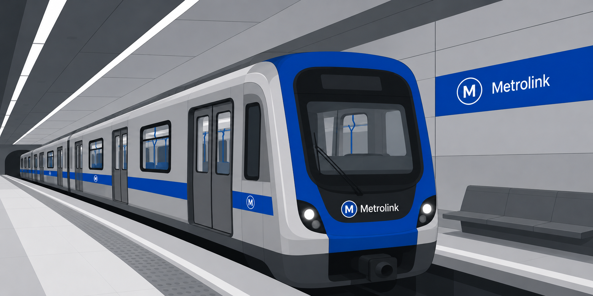

MetroLink - Centro de Transporte

Somos la red de subte de Nueva Costera. Conectamos los principales puntos de la ciudad a través de 6 líneas que recorren más de 80 km bajo la superficie, transportando a más de 1,5 millones de personas por día.
Trabajamos para ofrecer un servicio rápido, seguro y accesible, integrando tecnología inteligente que permite informar en tiempo real el estado del servicio, optimizar las frecuencias y mejorar la experiencia de viaje de nuestros usuarios.